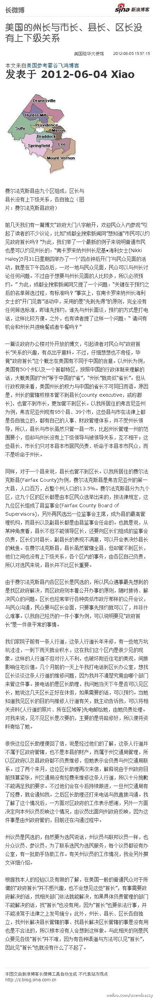

现在知道了直辖巿领导也可以对抗中央？ //@yaksa9://@Jacc0: 1957年阿肯色州州长拒绝执行最高法院判决，导致黑人学生无法上学，当班总统艾森豪威尔派出101空降师，护送黑人学生上学。网页链接 我当年读书至此，最诧异的倒不是种族歧视，而是省长居然敢对抗中央？以下犯上，三纲五常全乱套了@美国驻华大使馆:美国州长与市长、县长、区长没有上下级关系：最近我们发表了谈美国政府办公楼对外开放的博文，引起读者对民众与“政府首长”关系的兴趣，有点出乎意料。不过，仔细想想也不奇怪，毕竟“政府首长”这个概念在两国含意不同。美国州长根本管不到县长，也管不到市长，更管不到区长。网页链接 
比如告诉我们为什么苹果卖得那么贵？ //@王小川:这个故事能带给我们很多启发@创业家传媒:【因为诚信 油条也限购】扬州一家20多平米的油条店，大门上一张圆形标牌：“温馨提示：每人限购5根”。店老板是扬州家喻户晓的诚信“油条哥”黄德宏，他家的油条是“用老面粉和鸡蛋发酵,不放明矾和其它的食品添加剂”而且坚持每天用新油炸。因为生意太好,不得已才限购。 网页链接
//@djvu9:很多信息是不确切的。比如说97计划是从9号楼以及7号楼的厕所飞了根线，当时7#BBS某神还放了个后门。BBS只是KCN用了两个晚上把Firebird BBS的两个进程给去掉了不是重写，当时貌似是水木撑不住了。23是某生猛师兄义正词严批判某学习大牛师姐太虚伪的帖子，大家都知道虚伪不过之前没人好意思说---:抱歉，此微博已被作者删除。查看帮助： 网页链接
中国的中产阶级的确是有钱了？ //@尹鸿:三放弃，他们很可能选择离乡背井?@金铁木: 出国上或不上都比在国内上大学靠谱////@平凡mama：我周围朋友的孩子几乎无一例外的都放弃高考了。我是这群孩子出国的最大推手，其原因很简单，我教了几十年高中，带了二十多届高三，得是：不要留恋国内的高三和高考！@央广新闻晚高峰:数据显示，今年全国高考报名人数约900万，较2008年相比，四年锐减15%。高考2012-06-05#晚高峰新闻调查#放弃报名或考试、放弃志愿填报、放弃报到的“三放弃”现象日趋普遍。您身边有朋友拒绝高考吗？他们为什么对高考说“不”？请在这里发表您的观点和意见。调查结果将在中国之声晚高峰节目19：45揭晓。